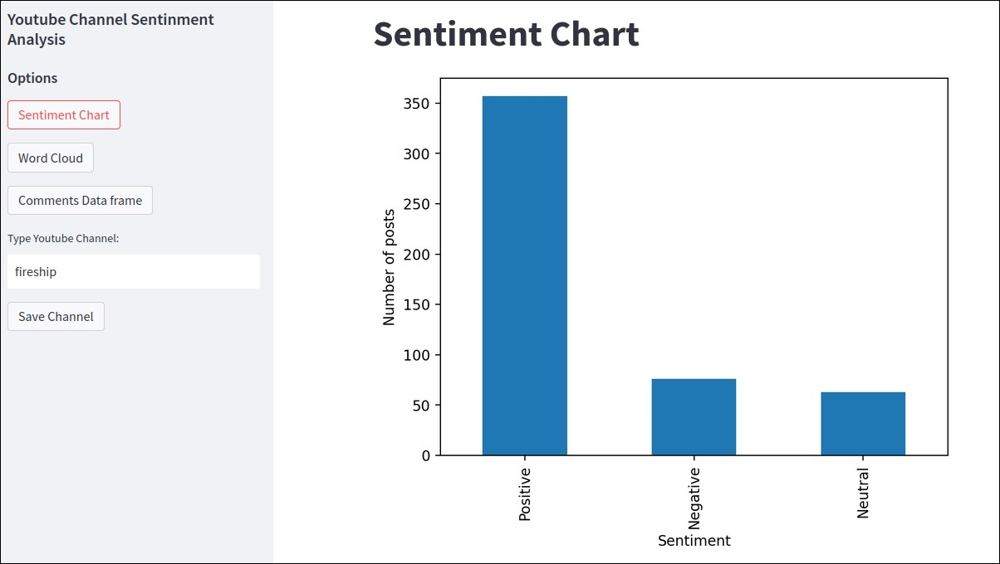
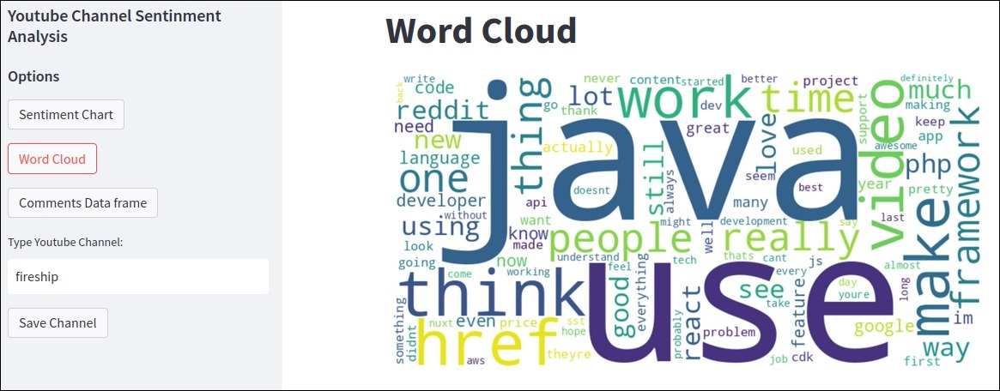
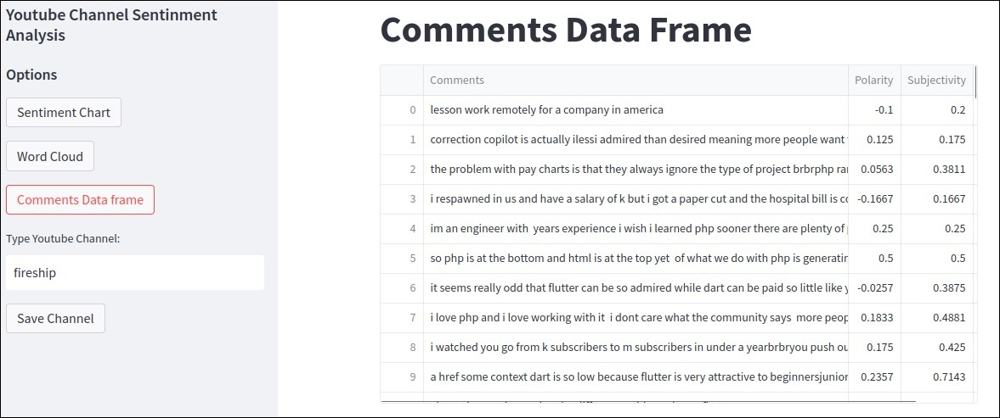

Youtube Sentiment Analysis
- One of its functionalities is to generate a bar graph about the polarity of the comments. They can be neutral, positive or negative: 
- Another thing is to create a word cloud with the words most frequently used in the comments. Common words that don't generate sentiment or can't be used in the analysis are not taken into consideration. The word cloud looks like: 
- And the original dataframe with all the comments and their respective polarity, subjectivity and classifications: 
This project allows the user to input a YouTube channel name and get a sentiment analysis about the channel's recent comments. It uses YouTube's API to retrieve the top comments from the last 10 videos on the specified channel and make an analysis on top of that:
Technologies Used:
- YouTube API: Integrated the YouTube API to retrieve channel information, video data, and comments from YouTube. This involved authenticating the API requests and handling the API responses.
- Streamlit: Utilized Streamlit, a web application framework, to create an interactive dashboard for the sentiment analysis tool. Developed user interface components, such as text inputs, buttons, and data visualizations, to enhance user experience.
- Flask: Implemented a backend API using Flask, a micro web framework, to handle data processing tasks. The API received requests from the frontend, processed the data using TextBlob for sentiment analysis, and returned the results to the frontend.
- Docker: Employed Docker for containerization, enabling easy deployment and scalability of the application. Created Docker images for the frontend, backend, and data processing components, allowing them to run independently and communicate with each other through defined interfaces.
- TextBlob: Utilized the TextBlob library, a powerful NLP tool in Python, for sentiment analysis of the extracted comments. Performed sentiment classification on the comments to determine their polarity (positive, negative, or neutral) and subjectivity.